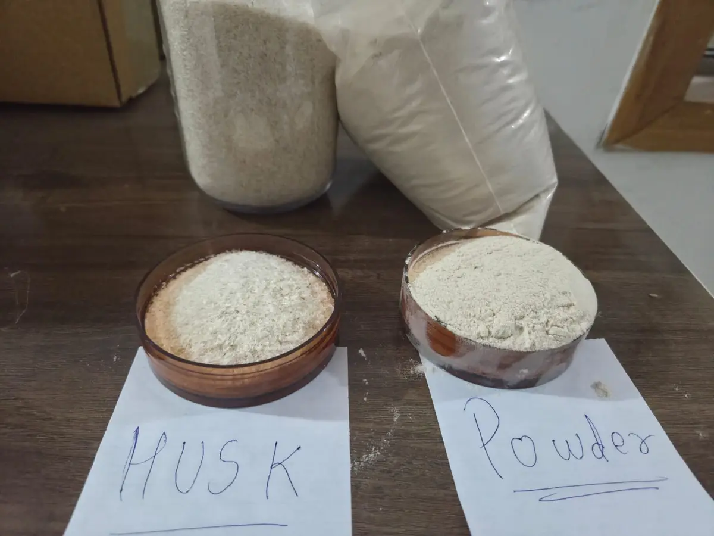

Why One Ingredient Has So Many Uses
Psyllium husk is the seed coat of Plantago ovata. It is mostly mucilage, a fibre that swells in water and forms a firm, slippery gel. That single behaviour does different jobs in different products: it bulks and firms stool in an animal's gut, it moves sand through a horse's colon, it glues seed and mulch to bare soil, and it holds gluten-free dough together. The application decides which form, purity and documentation you need.
At a Glance
| Use | Form | Typical grade | What matters most |
|---|---|---|---|
| Dog and cat food | Powder | 85% to 95% | Microbiology, especially Salmonella |
| Horse sand-clearance pellets | Whole husk or coarse powder, pelleted | 85% to 95% | Swell volume, consistent pellet binding |
| Hydroseeding tackifier | Finely ground | Industrial or 85% | Fineness, so it disperses in the slurry |
| Gluten-free and keto bakery | Powder, 60 to 80 mesh | 95% to 98% | Colour, fineness and food-grade microbiology |
| Livestock and poultry feed | Khakha (by-product) | Not graded as husk | Price and fibre content |
Dog and Cat Food
Pet food makers use psyllium as a fibre source. In the gut it absorbs water and forms a bulky mass, which helps with constipation, and the same water-binding action firms loose stools by holding free water. It appears in dry and wet foods, digestive-support treats and stand-alone fibre powders for pets, described in trade coverage as a fibre source for dog and cat diets (Petfood Industry).
Pet food does not need pharmaceutical purity, so 85% to 95% is the usual range. What it does need is clean microbiology. Pet food regulators treat Salmonella as a zero-tolerance hazard, so ask for Salmonella and Enterobacteriaceae results on every lot, and consider steam-sterilised material if your process has no kill step after the psyllium is added.
Horses: Sand Clearance Pellets
Horses that graze short pasture or eat from sandy ground swallow sand, which can collect in the colon and cause sand colic. Equine supplement brands sell psyllium pellets to help move that sand through. A typical programme feeds psyllium for one week out of every month; one leading product recommends one to one and a half 5 oz scoops a day for an average 1,000 lb horse (Farnam Equi-Aid).
For pellet makers, the husk is the active ingredient, so swell volume is the line that matters. Lower purity grades work well here, because seed fragments do not harm a horse, but the swell volume should be specified and tested per lot so the product performs the same from batch to batch.
Erosion Control on Construction Sites
When a highway cut, a building site or a slope is stripped of vegetation, it is often reseeded by hydroseeding: seed, mulch and water sprayed on as a slurry. A tackifier is added to glue the mulch and seed to the soil until the plants take hold. Finely ground psyllium is one of the standard plant-based tackifiers. The California Department of Transportation lists it as a good alternative to guar, forming a firm but rewettable layer that binds the soil while still letting seed germinate, applied at 80 to 200 pounds per acre and drying in 12 to 18 hours (Caltrans Erosion Control Toolbox).
This is the one use where food-grade purity adds cost without adding value. Tackifier makers care about fineness, because the powder has to disperse in a tank without clumping, and about consistent viscosity once it hydrates. Specify the mesh and a minimum swell volume, and leave the purity and microbiology lines at a practical level.
Gluten-Free and Keto Baking
Gluten gives bread its stretch and structure. Without it, dough falls apart. Psyllium powder replaces part of that structure: it forms a gel that traps gas, holds the crumb together and makes gluten-free bread that can be sliced and handled. It is also widely used in low-carbohydrate and keto breads, where it adds fibre and binding without starch.
Bakeries usually want powder between 60 and 80 mesh, because coarser material leaves visible specks and a gritty bite. Purity matters more here than in animal uses, because the seed fragments in lower grades show up as dark specks in a light loaf. A 95% or 98% powder with food-grade microbiology is the common choice.
Khakha: The By-Product
When psyllium seed is milled, the husk is separated from the seed and graded. What remains between the clean husk and the de-husked seed is a mix of fine husk particles and seed fragments, sold in Gujarat as khakha or kha-kha powder. It is not sold for human consumption. Its main markets are livestock feed: cattle, poultry, horse and pet feed makers buy it as a low-cost fibre and binding ingredient.
Khakha is priced well below graded husk and traded mostly within India. If you are buying it for feed, judge it on fibre content, moisture and freedom from foreign matter rather than on purity, because it is not graded on the husk purity scale at all. If you need khakha, tell us the volume and use, and we will check availability with processors in Unjha.
What to Put in Your Specification
- The application. Telling the supplier the end use is the fastest way to get the right grade at the right price.
- Form and mesh. Whole husk, or powder with a stated percentage passing a stated sieve.
- Purity. Only as high as the application needs.
- Swell volume. A minimum in ml per gram, for any use where the gel does the work.
- Microbiology. Strict for pet food and bakery, practical for tackifiers and feed.
If you already have a specification, send it to us and we will quote against it. If you do not, tell us the application and the destination market and we will suggest a starting point.
Frequently Asked Questions
1. Is psyllium husk used in dog food?
Yes. Pet food makers use psyllium as a fibre source. It absorbs water in the gut, which helps with constipation and also firms loose stools. Grades of 85% to 95% are common, with strict Salmonella testing on every lot.
2. Why is psyllium fed to horses?
Horses that graze or eat off sandy ground can collect sand in the colon. Psyllium pellets are fed, typically one week each month, to help move that sand through and reduce the risk of sand colic.
3. How is psyllium used in construction and erosion control?
Finely ground psyllium is used as a plant-based tackifier in hydroseeding. Mixed into the seed and mulch slurry, it glues the mulch and seed to bare soil on slopes and construction sites until plants establish. Caltrans lists application rates of 80 to 200 pounds per acre.
4. What mesh of psyllium powder is best for gluten-free baking?
Powder between 60 and 80 mesh is the usual choice. It disperses evenly in dough and avoids the visible specks and gritty texture of coarser material.
5. What is psyllium khakha powder?
Khakha is the by-product left after psyllium seed is milled and the clean husk is separated. It is a mix of fine husk particles and seed fragments, not sold for human consumption, and used mainly as a fibre ingredient in cattle, poultry, horse and pet feed.